Protección de una API Express con hash de contraseñas, tokens de acceso, control de roles y políticas de seguridad.
| Estudiante | ____________________________________________ |
| Docente | Giancarlos Barboza N. |
| Sección | Seminario IA 501 |
| Fecha | 02 de noviembre de 2026 |
El objetivo es proteger la API del sistema de inventario con autenticación y controles de acceso, almacenar contraseñas como hashes no reversibles y reducir riesgos comunes mediante políticas de seguridad en Express.
La implementación usa Express, Sequelize, MySQL, bcryptjs, jsonwebtoken, Helmet, CORS y express-rate-limit. El cliente React inicia sesión y envía el token en el encabezado Authorization. El servidor valida el JWT y vuelve a comprobar que el usuario exista y esté activo.
| Requisito de la guía | Implementación observada en el proyecto | Estado documental |
|---|---|---|
| Hash seguro de contraseñas | bcryptjs con factor 12; el modelo persiste el valor en password_hash. | Implementado; captura de BD censurada. |
| Registro, inicio de sesión y JWT | POST /api/auth/register, POST /api/auth/login y emisión de token HS256 con vencimiento. | Implementado; login 200 capturado con datos privados censurados. No se conserva una captura de register. |
| Middleware de autenticación y roles | Verifica Bearer/JWT; las mutaciones de categorías y proveedores requieren rol Administrador. | Implementado; captura disponible de operación denegada por rol. |
| Helmet, CORS y límites de intentos | Helmet, lista de orígenes permitidos y límites separados para login y registro. | Implementado en código fuente. |
| Terminales y MySQL | Frontend, API y tablas del inventario visibles en las capturas. | Capturado. |
| CRUD del navegador y Postman | Categorías guardadas, listadas, actualizadas y eliminadas; solicitudes Postman muestran los métodos y códigos. | CRUD de API capturado; falta captura directa del botón Guardar en navegador. |
Helmet agrega encabezados de seguridad; CORS acepta los orígenes configurados, y el parser JSON limita el tamaño de las solicitudes. Las rutas de autenticación se montan antes del middleware que exige sesión al resto de la API.
app.use(helmet())
app.use(cors({
origin: origenesPermitidos,
methods: ['GET', 'POST', 'PUT', 'PATCH', 'DELETE', 'OPTIONS'],
allowedHeaders: ['Content-Type', 'Authorization'],
maxAge: 86400
}))
app.use(express.json({ limit: '1mb' }))
app.use('/api/auth', rutasAutenticacion)
app.use(autenticar)
Fuente: miApi/index.js. La lista FRONTEND_ORIGINS se configura en el entorno; no se incluyen valores secretos.
const limitarLogin = rateLimit({
windowMs: 15 * 60 * 1000,
limit: 10,
standardHeaders: 'draft-8',
legacyHeaders: false
})
const limitarRegistro = rateLimit({
windowMs: 15 * 60 * 1000,
limit: 5,
standardHeaders: 'draft-8',
legacyHeaders: false
})
Fuente: miApi/routes/autenticacion.js. Se permiten hasta 10 intentos de login y 5 registros por ventana de 15 minutos, según la configuración del proyecto.
async function hashPassword(password) {
return bcrypt.hash(password, 12)
}
passwordHash: {
type: DataTypes.STRING(255),
allowNull: false,
field: 'password_hash'
}
Fuente: miApi/services/passwords.js y miApi/models/Usuario.js. El hash no puede convertirse de vuelta a la contraseña original; en la captura se ocultaron sus valores y los correos.
La API valida tipos, formatos y longitudes antes de procesar credenciales. Para consultar usuarios usa Sequelize con condiciones estructuradas (findOne({ where: { email } })) en vez de concatenar texto de entrada en una sentencia SQL; el ORM genera consultas parametrizadas. Helmet aplica encabezados HTTP protectores, pero no sustituye la validación ni el escape contextual de contenido si se incorporaran vistas HTML.
const usuario = await Usuario.create({
...userValues,
passwordHash: await bcrypt.hash(password, 12),
rol: usuariosExistentes === 0 ? 'Administrador' : 'Almacenero',
activo: true
})
La ruta de registro valida nombre, correo y longitud de contraseña, almacena el hash en vez del texto original y no permite que el formulario público elija el rol. El primer registro obtiene Administrador; los siguientes, Almacenero.
jwt.sign(
{ rol: usuario.rol },
obtenerSecretoJwt(),
{
algorithm: 'HS256',
subject: String(usuario.id),
expiresIn: process.env.JWT_EXPIRES_IN || '2h'
}
)
El secreto se obtiene de una variable de entorno y el backend exige un mínimo de 32 bytes. Al recibir una petición, valida el esquema Bearer, la firma HS256, el vencimiento y el identificador; además consulta que la cuenta continúe activa.
const authorization = req.get('authorization') || ''
const [scheme, token] = authorization.split(' ')
if (scheme !== 'Bearer' || !token) {
return res.status(401).json({ error: 'Debes iniciar sesión para continuar.' })
}
const payload = jwt.verify(token, obtenerSecretoJwt(), {
algorithms: ['HS256']
})
Fuente: miApi/routes/autenticacion.js y miApi/middleware/autenticacion.js.
function autorizar(...rolesPermitidos) {
return (req, res, next) => {
if (!req.usuario || !rolesPermitidos.includes(req.usuario.rol)) {
return res.status(403).json({
error: 'No tienes permisos para realizar esta acción.'
})
}
return next()
}
}
El middleware global requiere una sesión para las rutas privadas; las operaciones de creación, edición y eliminación de categorías se reservan al rol Administrador. El acceso autenticado sin permisos devuelve 403, mientras que una petición sin token devuelve 401.
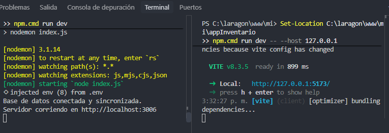
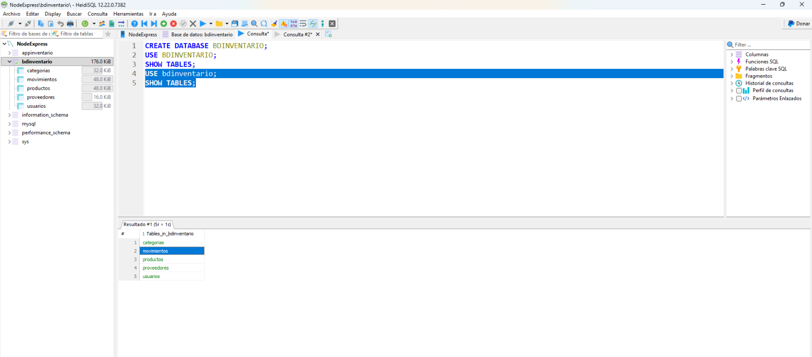
bdinventario con tablas de inventario y usuarios.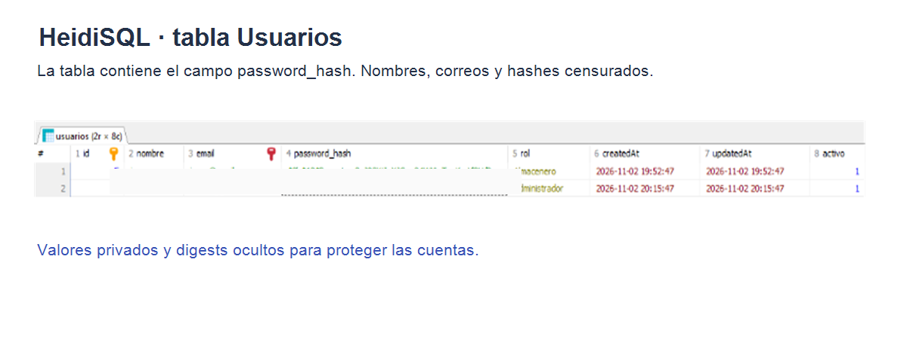
password_hash; los correos y los valores de hash se censuraron. La implementación bcrypt se respalda con el fragmento de código anterior.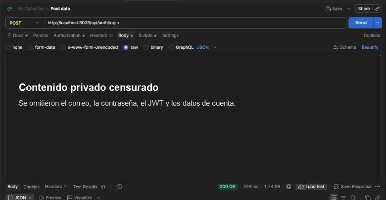
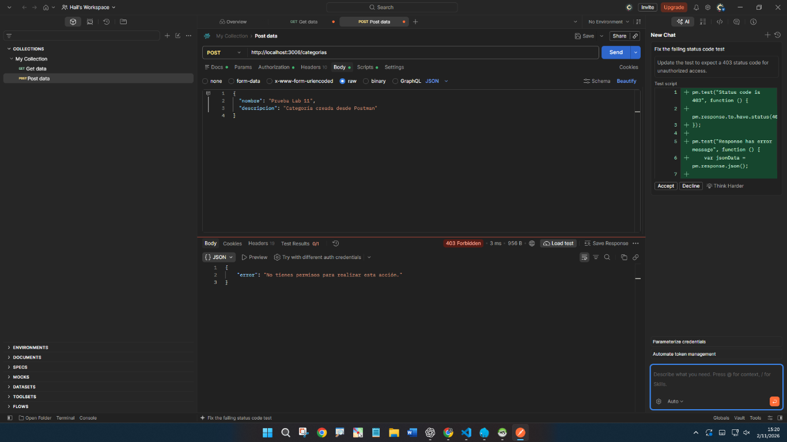
401 antes de comprobar el rol si falta el Bearer o el JWT es inválido; llegar a 403 confirma que la petición se autenticó y fue rechazada por autorización.200, JWT emitido) y solicitud protegida que llega al control de roles (403). Eso demuestra que se presentó un token reconocido; el rechazo de la creación indica que el usuario autenticado no tenía permiso de Administrador para esa operación, no que el JWT hubiera fallado.403 sí aporta evidencia directa de autenticación exitosa en una ruta protegida, pero no se presenta como captura de esos dos GET.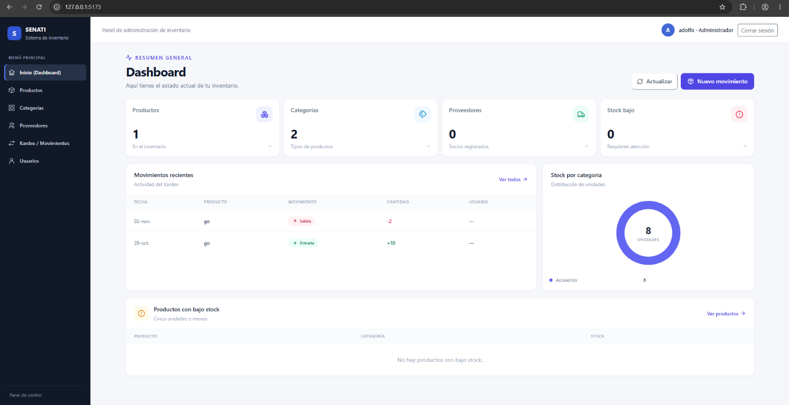
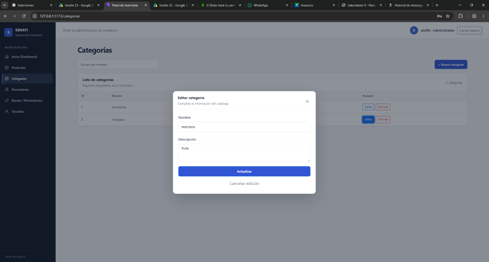
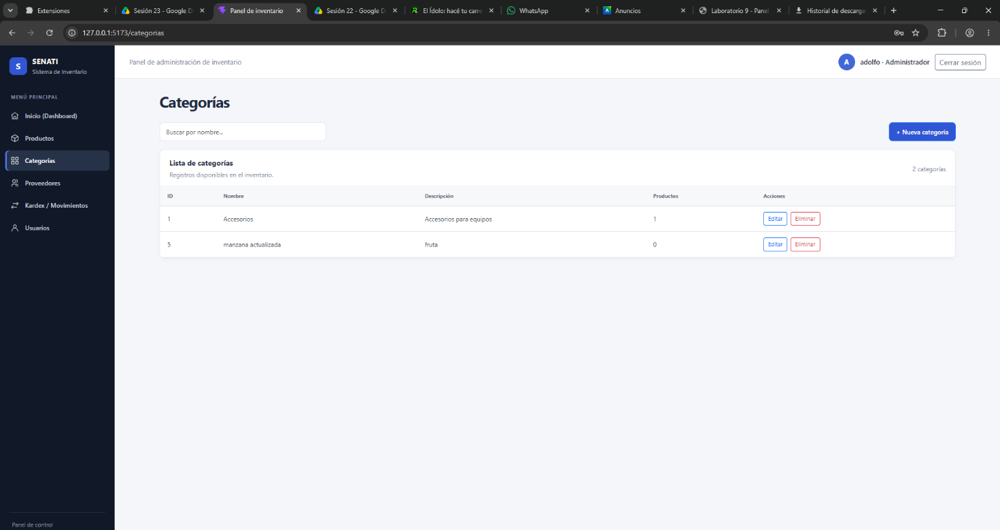
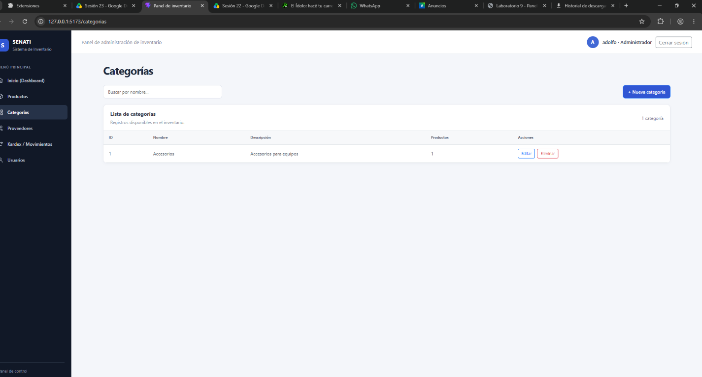
Las capturas de los endpoints CRUD se reutilizan como pruebas del mismo sistema de inventario. No contienen el JWT; los resultados HTTP observados se muestran junto a cada solicitud.
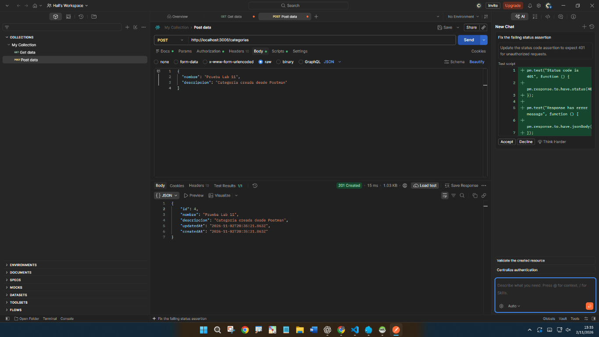
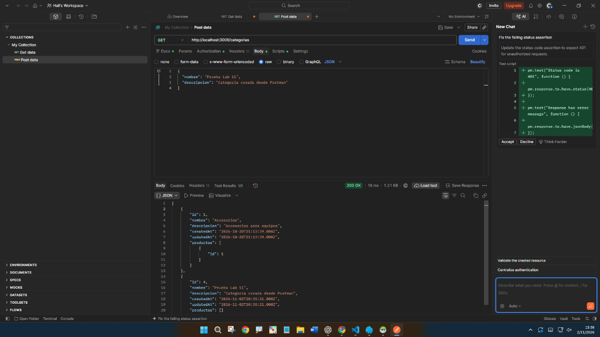
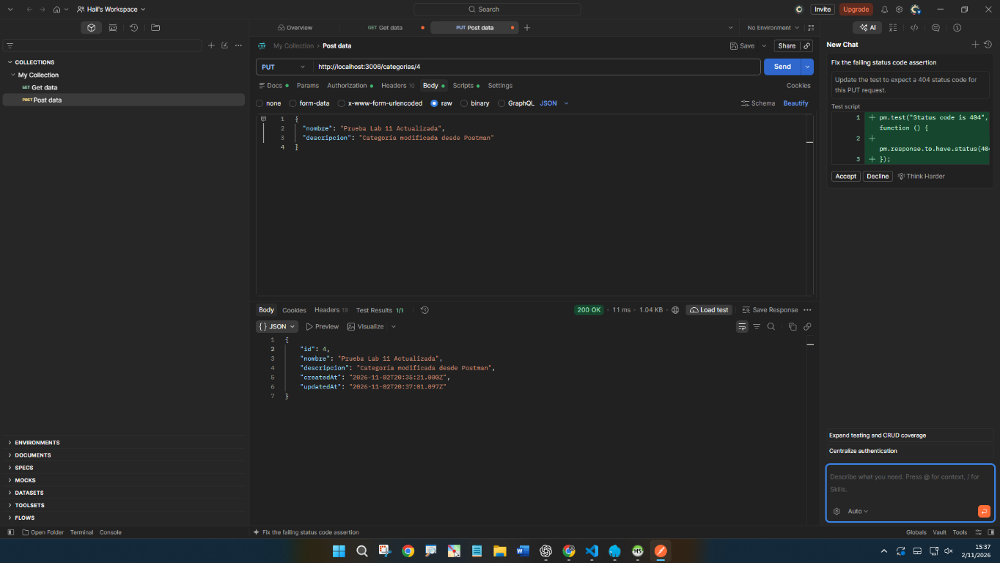
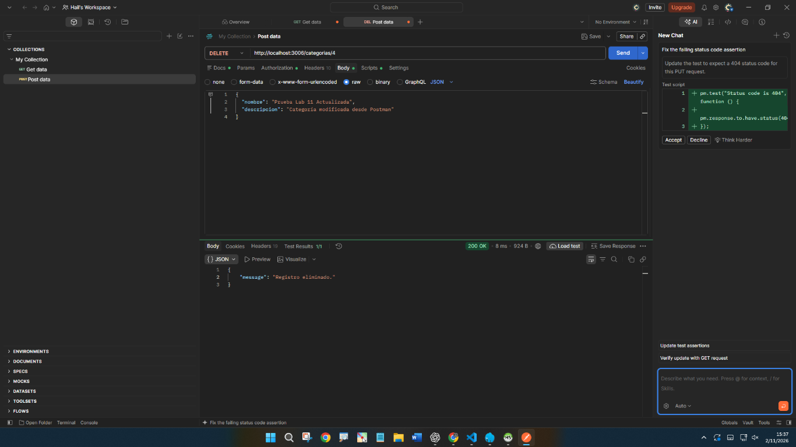
| Operación | Resultado capturado | Observación |
|---|---|---|
| POST /categorias | 201 Created | Recurso de prueba creado mediante API. |
| GET /categorias | 200 OK | Listado disponible; la imagen no acredita el encabezado Bearer. |
| PUT /categorias/:id | 200 OK | Recurso de prueba modificado. |
| DELETE /categorias/:id | 200 OK | Recurso de prueba eliminado. |
La API del proyecto integra contraseñas con bcrypt, autenticación mediante JWT, validación de usuario activo, autorización por rol, protección de encabezados con Helmet, CORS con lista de orígenes y límites de intentos de login y registro. También se cuenta con capturas del entorno, la base de datos, un login satisfactorio con datos censurados, una operación denegada por rol y el CRUD de categorías por API.
| Elemento solicitado por la guía | Estado | Qué acredita este informe |
|---|---|---|
| Documentación de código y ejecución | Parcial | Extractos del código fuente y capturas reales de ejecución; no se dispone de capturas del código abierto en VS Code. |
| Terminal backend/frontend | Con evidencia | Terminal compartida con ambos servicios. |
| Tablas MySQL/HeidiSQL | Con evidencia | Tablas del inventario y captura censurada del campo password_hash. |
| POST, GET, PUT y DELETE en Postman | Con evidencia CRUD | Respuestas HTTP 201/200 de categorías; la captura GET no permite verificar que se envió Bearer. |
| Guardar/modificar/eliminar en navegador | Parcial | Se documentan la categoría existente, edición y eliminación; no se conservó captura directa del guardado en pantalla. |
| Registro POST de usuario y respuesta | Solo código | Ruta y comportamiento descritos; no hay captura disponible de la respuesta de registro. |
| GET protegido sin token y autorizado | Solo implementación | El middleware define 401 sin token y 200 cuando la petición autorizada procede; faltan capturas de ambos casos. |